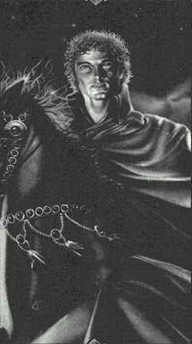

Бранд(Судя по всему мертв, убит Каином )Зеленые глаза, рыжие волосы, короткая борода, невысокий. Цвет одежды: зеленый. Обладатель Вервендила, дневного клинка - горящего лезвия Лабиринта. Подвергся полному ритуалу, чтобы стать живой картой . Символ - падающая звезда на фоне звезд . В хрониках Корвина Бранд был главным злодеем. Он пытался исказить Лабиринт Амбера, приобретая таким образом власть, равную власти создателя. Корвин помешал исполнению его планов, создав новый Лабиринт. Насколько известно, Бранд умер. При жизни он был замкнут, легко поддавался переменам настроения и свои проблемы решал с упрямой решительностью. Раз встав на путь, он не желал менять направление, пути, которые он выбирал, редко бывали мельче вселенских масштабов. Могущественный и задумчивый, он был одним из самых романтичных деятелей клана Амбера. |
 |